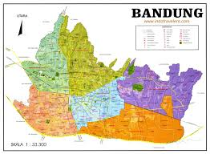
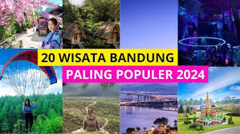
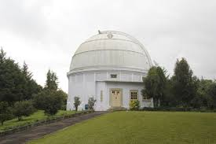

Sejarah

Bandung berasal dari kata bendungan, karena wilayahnya dulu tertutup danau purba akibat letusan Gunung Tangkuban Perahu. Secara resmi, kota ini ditetapkan sebagai ibu kota Kabupaten Bandung oleh pemerintah Hindia Belanda pada tahun 1810, di era Gubernur Jenderal Daendels, yang juga membangun Jalan Raya Pos (Anyer–Panarukan) melewati kota ini. Di awal abad ke-20, Bandung berkembang menjadi kota modern dengan tata kota bergaya Eropa. Karena keindahan alam dan suasana kotanya yang sejuk, Bandung dijuluki “Paris van Java”.
Puncak sejarah penting terjadi pada tahun 1955, saat Bandung menjadi tuan rumah Konferensi Asia-Afrika. Acara ini mempertemukan para pemimpin dari negara-negara Asia dan Afrika yang baru merdeka, untuk melawan kolonialisme dan membangun solidaritas global. Peristiwa ini membawa nama Bandung ke kancah internasional. Sejak saat itu, Bandung terus tumbuh menjadi pusat pendidikan, industri kreatif, teknologi, dan budaya.
Geografis

Kota Bandung terletak di bagian barat Pulau Jawa dan menjadi ibu kota Provinsi Jawa Barat. Kota ini berada pada ketinggian antara 700 hingga 1.000 meter di atas permukaan laut, menjadikannya memiliki udara yang sejuk dan nyaman. Secara geografis, Bandung berada di wilayah yang dikenal sebagai Cekungan Bandung, yaitu sebuah dataran tinggi yang dikelilingi oleh pegunungan seperti Gunung Tangkuban Perahu, Gunung Burangrang, dan Gunung Malabar. Kondisi ini membuat Bandung memiliki lanskap berbukit dan pemandangan alam yang indah.
Iklim di Bandung termasuk tropis pegunungan, dengan suhu rata-rata harian antara 22–26°C. Kota ini juga dialiri oleh Sungai Cikapundung yang bermuara ke Sungai Citarum, yang menjadi sumber air penting bagi wilayah sekitarnya. Dengan kondisi geografis yang subur dan iklim yang mendukung, Bandung berkembang menjadi kota yang potensial dalam bidang pertanian, pariwisata, dan industri kreatif.
Wisata

Bandung merupakan salah satu kota wisata favorit di Indonesia yang menawarkan berbagai pilihan, mulai dari wisata alam, kuliner, hingga belanja. Dikelilingi pegunungan dan beriklim sejuk, Bandung memiliki banyak destinasi alam menarik seperti Kawah Putih, Gunung Tangkuban Perahu, Tebing Keraton, serta kawasan Lembang dan Ciwidey yang terkenal dengan kebun teh dan hutan pinusnya. Selain itu, kota ini juga dikenal sebagai surga belanja dengan deretan factory outlet di Jalan Riau dan Dago, serta pusat-pusat distro kreatif anak muda. Wisata kuliner di Bandung pun sangat beragam, mulai dari makanan khas seperti batagor, mie kocok, seblak, hingga jajanan modern yang banyak ditemukan di kafe-kafe kekinian. Kombinasi antara keindahan alam, kekayaan budaya, dan kreativitas menjadikan Bandung tujuan wisata yang selalu ramai dikunjungi.
Boscha

Observatorium Bosscha adalah pusat pengamatan bintang yang terletak di Lembang, Kabupaten Bandung Barat, sekitar 15 km dari pusat Kota Bandung. Didirikan pada tahun 1923 oleh pemerintah Hindia Belanda dan diresmikan pada 1928, Bosscha menjadi observatorium tertua di Indonesia. Tempat ini dikelola oleh Institut Teknologi Bandung (ITB) dan masih aktif digunakan untuk penelitian astronomi serta edukasi publik. Bangunannya yang ikonik, dengan kubah besar dan teleskop utama berdiameter 60 cm, menjadikan Bosscha sebagai salah satu destinasi edukatif dan wisata ilmiah yang menarik di kawasan Bandung.
Gedung Sate

Gedung Sate adalah bangunan ikonik yang terletak di pusat Kota Bandung dan menjadi simbol arsitektur kota ini. Dibangun pada tahun 1920 oleh pemerintah Hindia Belanda, gedung ini awalnya difungsikan sebagai kantor Departemen Pekerjaan Umum. Nama "Gedung Sate" berasal dari ornamen berbentuk tusuk sate di puncak bangunan utamanya. Gaya arsitekturnya unik karena memadukan unsur Eropa klasik dengan arsitektur tradisional Nusantara. Saat ini, Gedung Sate digunakan sebagai kantor Gubernur Jawa Barat dan juga terbuka untuk wisata edukatif melalui Museum Gedung Sate, yang menyajikan sejarah dan perkembangan pembangunan Jawa Barat.